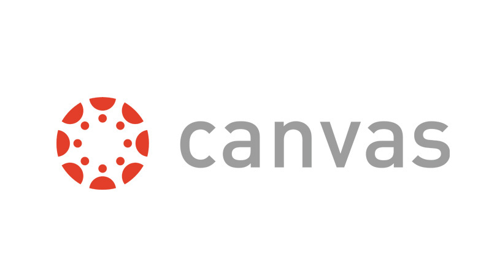
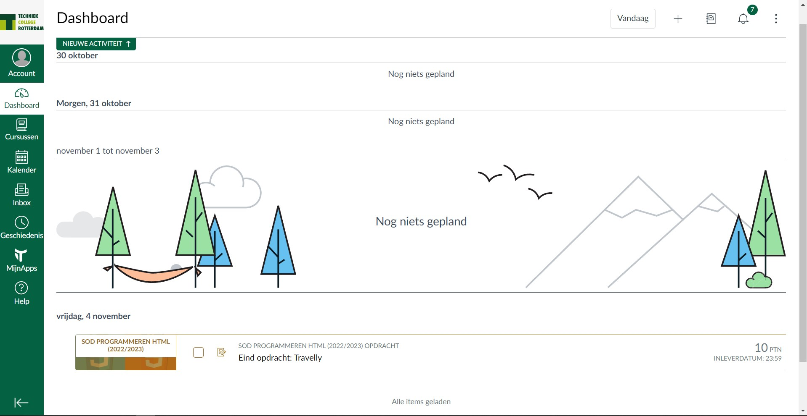

<!DOCTYPE html>
<html lang="en"></html>
   <head>
      <title>ouderavond</title>
      <link rel="stylesheet" href="style.css">
      <link rel="stylesheet" href="https://cdnjs.cloudflare.com/ajax/libs/font-awesome/5.15.3/css/all.min.css"/>
   </head>
   <body>
      <nav>
        <div class="logo"> 
            Canvas
         </div>
         <input type="checkbox" id="click">
         <label for="click" class="menu-btn">
         <i class="fas fa-bars"></i>
         </label>
         <ul>
            <li><a href="index.html">Home</a></li>
            <li><a href="bsa.html">Bsa</a></li>
            <li><a href="software.html">Software</a></li>
            <li><a href="locatiegids.html">Locatie Gids</a></li>
            <li><a href="opleiding.html">Opleiding</a></li>
            <li><a href="examenplan.html">Examenplan</a></li>
            <li><a class="active" href="canvas.html">Canvas</a></li>
            <li><a href="over Danyel.html ">Over Danyel</a></li>
            <li><a href="Over Amine.html">Over Amine</a></li>
         </ul>
      </nav>
      <h2>
         Wat is Canvas?
      </h2>
      <p>
         Canvas is open en betrouwbare webgebaseerde software waarmee instellingen digitaal leren kunnen beheren, 
         docenten online leermateriaal kunnen maken en presenteren en het leerproces van studenten kunnen beoordelen, 
         en studenten in staat kunnen stellen deel te nemen aan cursussen en toegang te krijgen tot de ontwikkeling van vaardigheden en feedback op leerprestaties.
         Bovendien, hoewel Canvas in de eerste plaats webgebaseerde software is, is Canvas toegankelijk voor elke gebruiker op een mobiel apparaat vanuit de apps Canvas Teacher, Canvas Student en Canvas Parent.
      </p> <br>
      <h2>
         Docent:
      </h2>
      <p>
         In Canvas wordt de rol Docent gebruikt om gebruikers in te schrijven die verantwoordelijk zijn voor het maken, instrueren en beheren van cursussen.
         Docenten worden in Canvas ook wel instructeurs genoemd.
         Over het algemeen hebben gebruikers met de rol Docent machtigingen waarmee ze een cursus kunnen modereren,
         cursusgegevens kunnen bekijken en dagelijkse cursuscommunicatie kunnen sturen. Deze machtigingen kunnen echter per instelling verschillen.
      </p> <br>
      <h2>
         Student:
      </h2>
      <p>
         In Canvas wordt de rol Student meestal gebruikt om gebruikers in te schrijven die aan een cursus zullen deelnemen voor cursustegoed. 
         Gebruikers die zijn ingeschreven als studenten kunnen cursusinhoud bekijken en deelnemen aan cursusopdrachten en communicatie. 
         Studenten kunnen een cursus pas bekijken en eraan deelnemen als deze is gepubliceerd en de cursus is gestart.
      </p> <br> <br>
       <br>
      
      <div class="content">
      </div>
   </body>
</html>